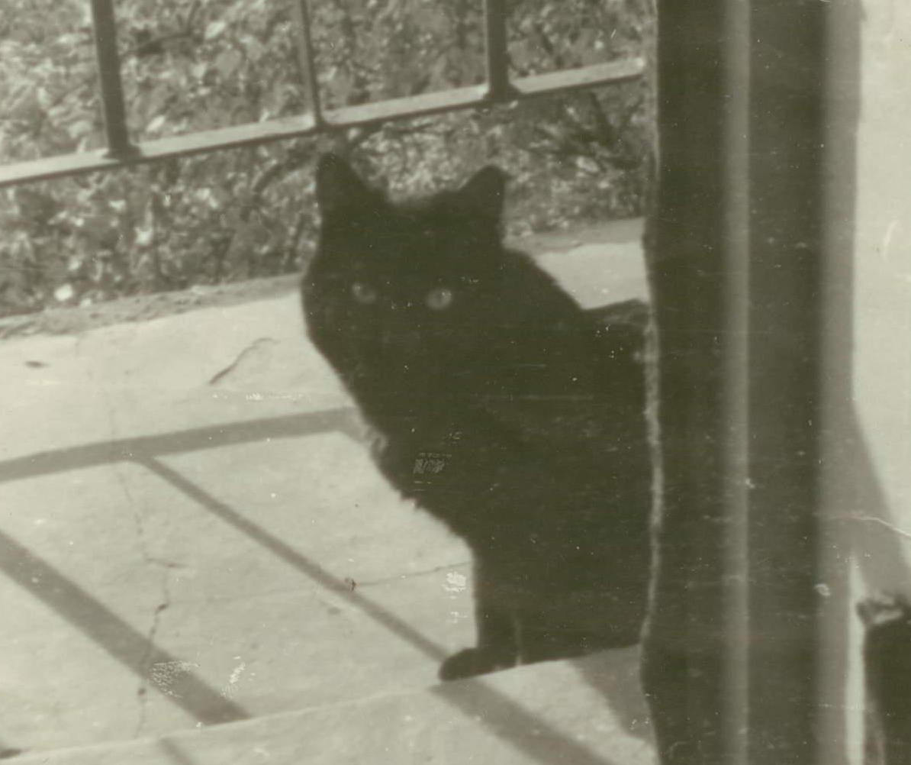

Глядя на сайт и читая предложенные рассказы можно, наверное, подумать, что автор двадцатипяти- или тридцатилетний балбес, маящийся дурью, или отъявленный графоман.
Насчёт графоманства, так оно и есть. Но вообще-то автор уже, так сказать, в весьма зрелом, возрасте. Уже даже на пенсии.
Однако, выдумывать и сочинять, начал в детстве: ещё когда учился в третьем классе, в журнале для детей был опубликован маленький рассказ о нашем, чёрном-пречёрном коте, найденном на улице совсем маленьким котёнком, вряд ли старше двух-трёх месяцев, и вытащенным мной из грязной и глубокой ямы.
Материться люблю и считаю, что матершинка — дело хорошее. Поэтому рассказики не без неё, родимой.
span style="cursor: pointer; text-decoration: underline;" onclick="window.parent.document.getElementById('showText').src='scool.html'">Первый раз в первый класс. Как становятся графоманами. Как я книжку издавал...